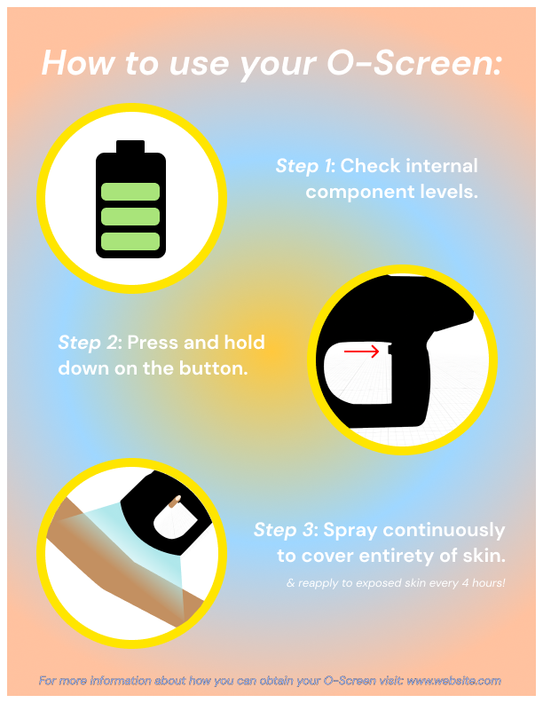
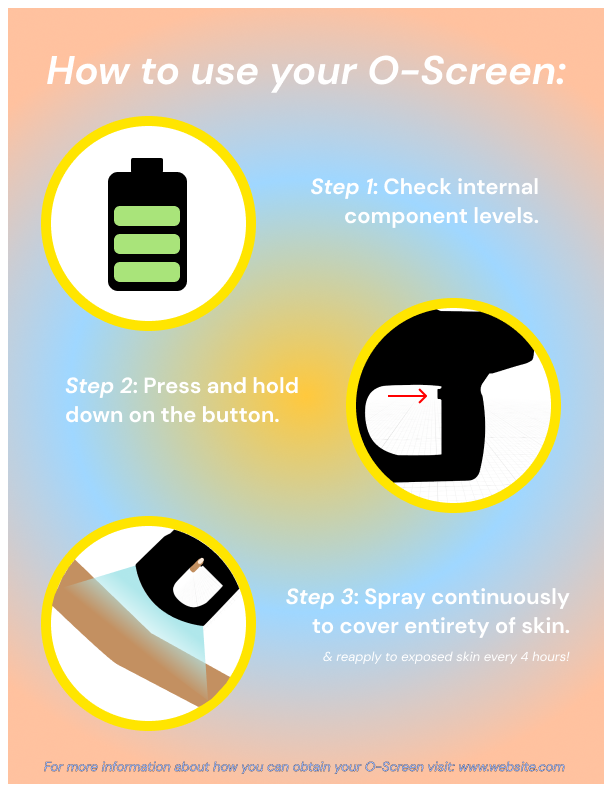

Type: Academic
Tools: Figma
Skills: Product design, Project Management, Marketing, 3D printing
For my Ideation and prototyping course, we were tasked in groups of three to design and build a product from dystopian or utopian future that doesn't exist yet. This is the O-Screen, a digital sunscreen dispenser. The year is 2080 and the ozone layer has been almost entirely depleted, leaving humans susceptible to torturous UV rays. Scientists have come up with a device that converts the elements naturally present in the surrounding air into ozone molecules in such a state that they can be applied to the skin and provide 24 hour protection.